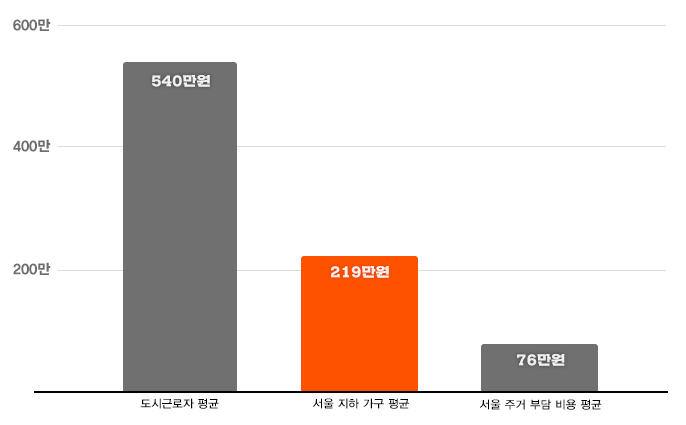
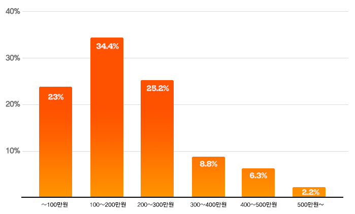

반지하는 옥탑방, 고시원과 함께 한국 사회의 열악한 주거환경을 대표한다. 햇볕이 들지 않아 집 안은 한낮에도 어두컴컴하다. 습기로 벽지는 얼룩지고 눅눅한 곰팡내가 나는데도 행여 지나가는 행인이 들여다볼까 창문조차 열지 못한다.
반지하는 영화 <기생충>이 화제가 되기 전까지 사회적 관심을 받지 못했던 주거공간이다. 반지하와 함께 ‘지·옥·고’로 묶이는 옥탑방이나 고시원보다 주거환경 개선 노력이 더뎠다. 지상에 있는 옥탑방과 고시원의 열악함은 눈에 쉽게 보이지만, 반지하는 직접 들어가보지 않고는 문제점을 찾기 어렵기 때문이다.
반지하는 1970년대 방공호로 시작했다. 남북 분단으로 언제 전쟁이 발발할지 모르니 대피소로 활용하기 위해 지하 주거층을 허용했던 것이다. 급격한 도시화는 반지하를 무분별하게 확산하는 촉매가 됐다. 주택 공급이 부족하자 공동주택에도 지하 1층을 주거용으로 허용하는 등 건축규제를 완화하면서 열악한 지하 주거공간이 40년 넘게 묵인돼 온 것이다.
본지는 한국도시연구소에 의뢰해 ‘전국 반지하 거주 현황’을 살펴봤다. 2월 19일 한국도시연구소가 분석한 ‘전국 반지하 거주 현황’을 보면 전국적으로 옥탑방은 5만3832가구(9만6365명), 고시원은 15만1553가구로 집계됐는데, 반지하는 36만3896가구(68만8999명)로, 옥탑방보다는 7배 이상 많다.
우리 주변에는 얼마나 많은 현실판 기택네가 살고 있을까.
1
우리동네검색
우리 동네에는 반지하가 얼마나 있나
- 읍·면·동 단위
- 지역구 단위
거주지역을 선택하시면
해당 지역의 반지하 거주 현황을 알려드립니다.
※ 2010년 인구주택총조사(전수조사)
※ 2010년 통계로 행정구역과 지명이 지금과 다를 수 있습니다.
지역구를 선택하시면
해당 지역구의 반지하 거주 현황을 알려드립니다.
※ 2010년 인구주택총조사(전수조사)
※ 2010년 통계과 중앙선거관리위원회에서 제공하는 읍면동별 선거구 현황 자료를 활용해 정리했습니다.
지역을 선택해주세요
경기도 고양시를(을) 선택하셨습니다.
이 지역에는 351495 가구가살고 있습니다.
그 중 반지하에 사는 이웃은 6,279가구입니다.
이는 이 지역 전체 가구의 1.8%에 해당하는 비율입니다.
2010년·읍면동을 기준으로 반지하에 거주하는 가구가 없었던 동네도 있었지만 가장 많았던 동네에서는 3182가구가 반지하에 거주하고 있었다. 영화 속에 등장하는 ‘반지하’는 영화 속 허구의 공간이 아닌 우리동네 곳곳에 실재하는 공간이다.
또한 주민들의 열악한 주거복지 문제는 해당 지역구 의원들이 풀어나가야 할 중요 의제다. 본지가 지역구 단위로 반지하 가구의 현황을 검색해볼 수 있게 한 이유다. 유권자들이 21대 총선에 나온 후보들, 그리고 당선자들이 자신의 지역구 주거 문제 대해 앞으로 어떤 의정활동을 할지 지켜봐주길 바란다.
2
전국 반지하 현황
수도권에 전국 반지하 가구의 95%가 산다
영화 <기생충>의 ‘기택네’처럼 지하(반지하) 주택에 거주하는 가구는 전국에 36만가구(2015년, 한국도시연구소)가 넘는다. 인구로 따지면 68만 8천명이 반지하에 거주하고 있다. 지자체별 반지하 거주 현황은 다음과 같다.
- 지자체 전체
- 수도권(서울·경기·인천)
※ 2015년 인구주택총조사(표본조사) 기준 / %는 전체 가구 대비 반지하 가구의 비율
막대그래프에 마우스를 올리면 지자체별 상세정보를 보실 수 있습니다.
반지하가구반지하 1인가구
고양시
전체 가구 135가구
반지하 가구 135가구
반지하 1인 가구 135가구
반지하 가구 비율 135%
전국 반지하 가구의 대부분인 95.8%(34만8782가구)가 수도권에 밀집돼 있다. 이 중 서울이 22만8467가구로 전체의 62.8%를 차지한다. 경기 지역은 9만9291가구, 인천은 2만1024가구가 반지하 거주 가구로 집계됐다.
가구가 아닌 인구 수 개념으로 따지면 반지하게 거주하는 전국 68만8999명 중42만6919명이 서울에 거주한다.
0가구1가구~30가구31가구~100가구101가구~1,000가구1,001가구~3,182가구
※ 2010년 인구주택총조사(전수조사) 기준
한국도시연구소 제공 전국 읍면동 단위 반지하 가구 비율 맵핑
전국 지도에서 지역별로 지하가구수에 따라 색을 달리해보면 반지하 가구의 수도권 집중도를 더 뚜렷하게 확인해볼 수 있다. 2010년 인구주택총조사 데이터를 기준으로 읍면동 단위로 지하가구수에 따라 지역의 색을 표시했다. 지역의 색이 진할 수록 반지하 거주 가구수가 많음을 나타낸다.
전국 229개 지자체 중에는 경기 성남시가 2만5683가구로 반지하 거주 가구 수가 가장 많았다. 비율로 따져보면 서울 중랑구가 11.3%로 가장 높았다. 사실상 중랑구의 주민 100명 중 11명이 반지하에 산다는 의미다.
수도권에만 유독 반지하 가구가 많은 까닭은 수도권의 높은 주거비와 무관하지 않다. 국토연구원의 2019년 2월 발표에 따르면 수도권에서 주택을 임차해 살기 위해서 부담하는 비용은 월평균 68.7만원이다. 서울시의 경우 월 평균 76.9만원에 이른다.
2018년 기준 서울 지역 반지하 가구의 월 경상소득은 평균 219만원*이다. 2018년 당시 도시근로자 월평균 소득은 540만1814원으로 반지하 가구 소득은 이보다 60%가량 적은 수준이다.
* 국토교통부의 2018년 주거실태조사자료를 토대로 한국도시연구소가 추출
도시 근로자 및 서울시 반지하 가구의 평균 월 소득
※ 통계 출처: 국토연구원·국토교통부
이 조사 결과에 따르면 서울 지역의 월 평균 주거 비용 76.9만원은 반지하 가구의 월 소득의 34%에 해당하는 금액이다.
높은 주거비를 감당할 수 없는 독거노인, 1인 청년가구 등 저소득 가구는 상대적으로 적은 금액으로 거주할 수 있는 공간을 찾아 자꾸만 ‘밑으로’ 내려가는 것이다.
서울시 반지하(및 지하) 거주가구의 월 소득
※ 국토교통부의 2018년 주거실태조사자료를 토대로 한국도시연구소가 추출
반지하 10가구 중 9가구는 전·월세로 사는 세입자였다. 그중에서도 보증금을 걸고 매월 임대료를 내는 보증부 월세가 53.6%(11만8609가구)로 가장 많았다. 반지하 거주 가구의 전·월세 보증금은 평균 3130만원이었으며 월세는 평균 34만원이었다.
반지하 가구 중 81.8%는 주거비가 부담스럽다고 답했고, 33.5%는 ‘매우 부담스럽다’고 답했는데, 이는 다른 주택유형을 포함한 전체 가구(17.1%)에서보다 2배가량 높은 비율이다.
반지하는 아이를 키우는 빈곤 가구가 선택할 수 있는 최후의 보루이기도 하다. 서울시가 지난해 조사한 ‘아동 주거빈곤 가구 주거실태조사’를 보면 응답자의 61.6%가 반지하에 살고 있었다.
실제로 반지하의 경우 ‘지·옥·고’로 묶이는 옥탑방이나 고시원과 비교했을 때 가구원수가 가장 많다. 가구원수별 현황을 보면 반지하는 2인 이상 가구가 전체의 48.2%로, 절반에 이른다.
반지하의 가구원수 평균은 1.9명으로 옥탑방 1.8명, 고시원 1.0명보다 높다. 옥탑방이나 고시원보다도 가족 단위 거주가 많다는 의미다.
“데이터를 보면 반지하는 옥탑이나 고시원에 비해 특히 수도권에 집중되어 있다. 지방에서는 조금만 여유가 있어도 거기까지는 안 사는 것. 높은 주거비와 연계가 되는 것이다. 수도권에서는 도시 빈곤층이 살 수 있는 주택이 반지하밖에 없다는 의미.”
- 한국도시연구소 최은영 소장
3
반지하는 어떤 지역에 많을까
100가구 중 6가구 반지하 사는 서울시
반지하는 어떤 지역에 많을까
한국도시연구소가 분석한 ‘전국 반지하 거주 현황’에 따르면 서울시 전체의 반지하 거주 비율은 약 6%다. 서울시의 100가구 중 6가구는 반지하에 거주하는 셈이다.
서울시 안에서도 반지하 가구 비율은 구별로 편차가 크다. 전체 25개 구 중 반지하 가구 비율이 가장 높은 중랑구는 반지하 가구 비율이 11.3%(17,839가구)지만, 가장 비율이 낮은 곳 노원구는 2.2%(4,483가구)로 다섯배 이상 차이가 난다.
그렇다면 서울시 안에서도 어떤 지역에서 반지하 가구가 비율이 높을까. 서울시 구 별 저소득노인 가구 비율, 한부모가구 비율 등을 차례대로 확인해보았다.
- 반지하가구 비율(기본)
- 기초생활수급가구 비율
- 한부모가정 비율
- 저소득노인 비율
서울시 안에서도 저소득노인가구가 많거나 한부모가구가 많은 지역(강북구·중랑구·광진구·은평구·금천구)에서 반지하 가구의 비율도 높게 나타났다. 빈곤가구 비율이 높은 지역에서 반지하 가구의 비율이 높은 것은 어찌보면 당연한 결과이다.
그렇다면 저소득노인가구와 한부모가구가 많았던 노원구와 강서구는 왜 다른지역과 달리 반지하 가구 비율이 낮았을까. 노원구와 강서구는 반지하 가구 비율이 2.2%와 4.3%로 서울시 전체 평균인 6% 보다 낮은 수치를 보였다.
그 원인은 임대아파트에서 찾을 수 있었다. 강서구는 임대 아파트 공급양이 31,952호로 서울시 전체 중 공급양이 가장 많았고, 노원구는 26,684호로 그 뒤를 이었다. 이는 서울시 전체 임대아파트 공급 평균인 10,351호를 크게 웃도는 양이다.
※ 서울지역임대주택현황(구별), 2017년 / SH공사 및 LH공사 총계
고양시
임대아파트 공급량 135호
즉 저소득노인가구나 한부모가구와 같은 빈곤가구가 많은 지역이더라도 공공·임대아파트와 같이 빈곤가구가 입주 할 수 있는 대체 주거공간이 충분히 있는 지역은 반지하 거주 비율이 낮아질 수 있음을 시사한다.